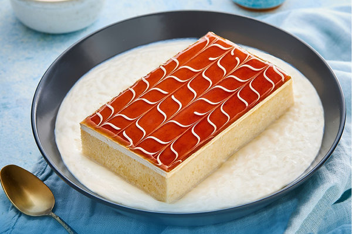
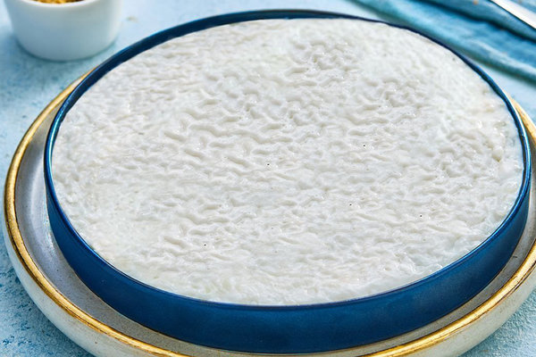
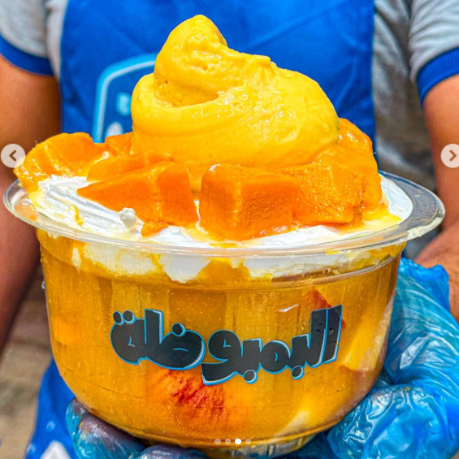
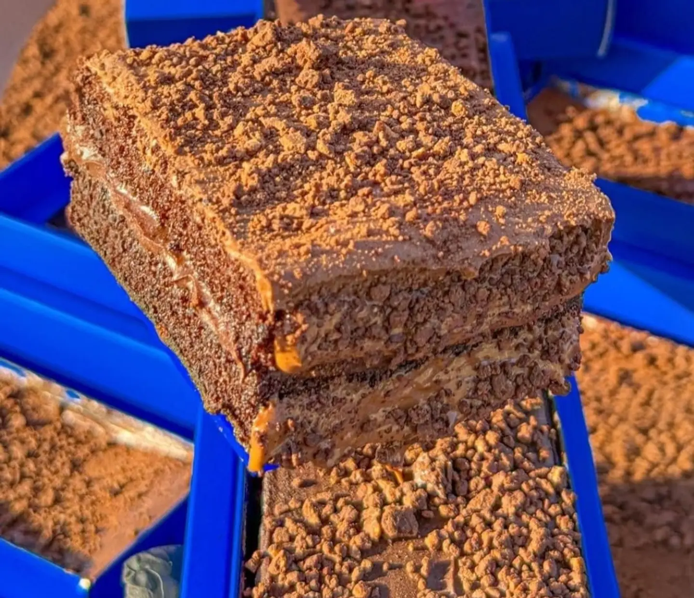
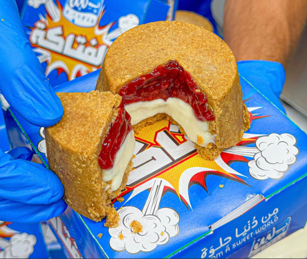

B-Laben Main Menu
—Menu—

Dubai Cheese Bomb
90 L.E
Indgredients: pistaceo sauce, Kunafa, cream, choclate suace.
Recipe: First, mixing the Kunafa with the pistaceo to make a Kunafa pistaceo. Then, putting half the amount of the Kunafa pistaceo in a bowl. After that, put some cream in the core and put the anohter half amount of kunafa pistaceo. The last step, put the choclate sauce and pistaceo sauce on the kunafa pistaceo that is filled with cream.

Qashtouta
60 L.E
Indgredients: French cake, plain rice pudding, chantilly cream.
Recipe: First, put the french cake in the plate. Then, put the chantilly cream on the top of the french cake. After that, put the preferred flavour. Also, add this french cake with chantilly cream on a plain rice pudding.
Flavours:(caramel-60 L.E/mango-75 L.E/with nuts-85 L.E/Lotus-85 L.E/pistaceo sauce-85 L.E)

Dubai Crepe
110 L.E
Indgredients: pistaceo sauce, Kunafa, cream, choclate suace.
Recipe: First, put the Tortilla bread on plate. Then, mix the kunafa with the pistaceo sauce to kunafa pistaceo and put it in the Tortilla bread. At last, fold the tortilla bread to make a triangle shape and the choclate sauce at top.

Rice Pudding
20 L.E
Indgredients: rice, milk, sugar, vanilla.
Recipe: First, put the milk with rice on a pan to get the rice cooked with milk. Then, add sugar, vanilla and mix the Indgredients well. After that, add the preferred flavour.
Flavours:(choclate with hizzen nuts-50 L.E/Belgian Lotus-55 L.E/Ice cream-35 L.E)

Dubai Haba
120 L.E
Indgredients: pistaceo sauce, Kunafa, choclate cake, choclate suace.
Recipe: First, mixing the Kunafa with the pistaceo to make a Kunafa pistaceo. Then, putting all the amount of the Kunafa pistaceo in the choclate cake. After that, put the preferred flavour.
Flavours:(choclate sauce with hizzen nuts-120 L.E/choclate sauce with pistaceo sauce with white choclate sauce-130 L.E/kinder sauce with pistaceo sauce-110 L.E)

Koshary Dessert
70 L.E
Indgredients: Cream, butter, kunafa, Golash, optional topping.
Recipe: First, frying the kunafa with butter. Then, add a layer of cream in a bowl and then putting thick layer of fried kunafa. After that, putting another layer of cream but more thicker. At last, putting the preffered sauce and some golash at the top.
Flavours:(nutella, Oreo nutella-70 L.E/Kinder, Lotus -80 L.E/Pistachio, Pistachio lotus-85 L.E/Mango-75 L.E)

Dabadibo London
75 L.E
Indgredients: Chocolate, pistachio, kunafa.
Recipe: It is just a beer made of choclate and filled with kunafa pistachio that is made by frying the kunafa with butter to make it fried and the mix it with pistachio.

Bamboza
50 L.E
Indgredients: pieces of mango ,mango sauce, cream, chantilly cream, bowl of ice cream, optional topping.
Recipe: First, mixing the pieces of mango with the mango sauce. Then, putting the pieces of mango with mango sacue into a bowl and add some cream and chantilly cream. After that , putting the a bowl of ice cream. At last, putting the preferred flavour.
Flavours:(Nuts, Hazelnut, Qeshta, Lotus, Mango-65 L.E)

Choco burger
125 L.E
Indgredients: pistaceo sauce, Kunafa, cream, choclate suace.
Recipe: First, mixing the Kunafa with the pistaceo to make a Kunafa pistaceo. Then, putting half the amount of the Kunafa pistaceo in a bowl. After that, put some cream in the core and put the anohter half amount of kunafa pistaceo. The last step, put the choclate sauce on the kunafa pistaceo that is filled with cream.

Fazea
150 L.E
Indgredients: Chocolate cake, choclate chantilly cream, choclate suace, choclate chips.
Recipe: First, mixing the Kunafa with the pistaceo to make a Kunafa pistaceo. Then, putting half the amount of the Kunafa pistaceo in a bowl. After that, put some cream in the core and put the anohter half amount of kunafa pistaceo. The last step, put the choclate sauce on the kunafa pistaceo that is filled with cream.

El-Fataka
100 L.E
Indgredients: Grounded biscuits, cream, rusberry sauce.
Recipe: First, putting half the amount of ground biscuits in a bowl. Then, putting the rusberry sauce on the grounded biscuits. And, add some cream on the rusberry sauce. After that, putting the another half amount of the grounded biscuits. At last, putting the preffered topping.
Flavours:(Pistachio, Lotus, Kinder, Nutella, Pistachio, Pistachio Nutella)

Gelato Roma
80 L.E
Indgredients: Ice cream, grounded biscuits.
Recipe: First, putting a small layer of grounded biscuits. Then, putting the preferred ice cream flavour. After that, putting the preferred sauce in the ice cream with grounded biscuits.
Flavours:(Oreo, Lotus, Pistaceo, Hazelnut, Chocolate, Blueberry Yogurt)